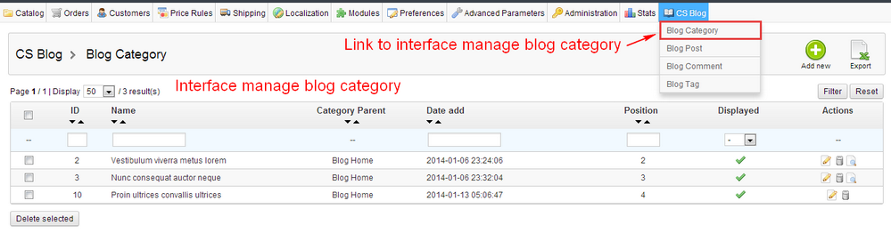
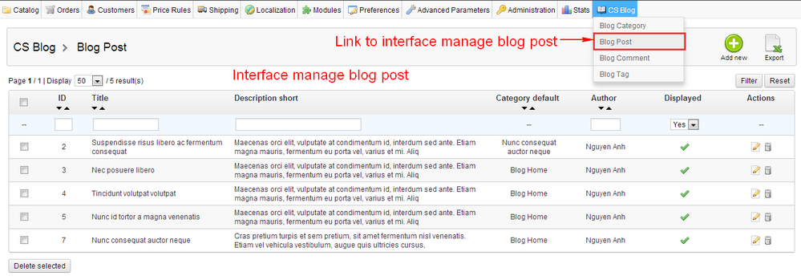
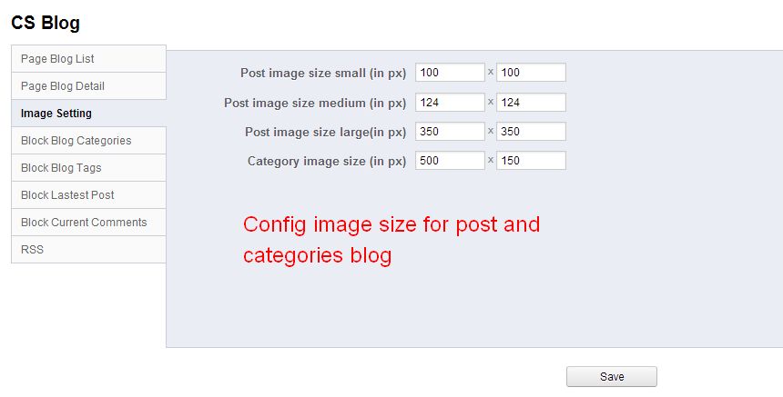

Presthemes - Prestashop blog module
Compatible with: Prestashop 1.5.x
Module CS Blog - Prestashop blog module.
Developed by : Codespot
Version : 1.0
Description : provide functions to manage post, categories (for post), and the block displays content related with post.
Please contact us with email address support@presthemes.com to be the best support.
Features of module
Module Prestashop blog module help user manage post, categories (for post), and the block displays content related with post.
- Compatibility : Prestashop 1.5.x
- Function : manage post, categories (for post), and the block displays content related with post. And config blocks are related with posts and categories.
- Interface: simple, easy to use.
- Install and config : simple, suitable for any user.
Installation module
Package csblog_1.5.x_rx.zip
- Download package csblog_1.5.x_rx.zip. Installed as steps below.
»Step 1 : Unzip file csblog_1.5.x_rx.zip. Then, copy just extract the folder (folder cssociallogin) into module folder of your existing prestashop project.
»Step 2 : Install module - in your backoffice go to Modules > Modules > Other Modules and click install module.
Admin interface
»Install finish.
Review interface admin
- Interface config module
- Interface manage blog category

- Interface manage blog post

- Interface manage blog tag
- Interface manage blog comment
Manage categories blog
Link to interface manage categories blog.
Functions of interface manage categories blog.
Interface add or edit category blog.
Manage posts blog
Link to interface manage posts blog.
Functions of interface manage posts blog.
Interface add or edit post blog.
Manage tags blog
Link to interface manage tags blog.
Functions of interface manage tags blog.
Interface add or edit tag blog.
Manage comments blog
Link to interface manage comments blog.
Functions of interface manage comments blog.
Interface view comment blog.

Config for module
-In your backoffice, go to menu Modules > Modules > Other modules > CS Blog> Configure.
- Config for page list post
- Config for page post detail
- Config for image size for posts and categories
- Config for block categories
When position display "blogleft" of block is selected, block is only display at column left in pages of blog module.
When position display "blogright" of block is selected, block is only display at column right in pages of blog module.
When position display "blogleftright" of block is selected, block is only display at column left and right in pages of blog module.
-Similarly for lastest post block, current comment block and tags block.
- Config for block tags
- Config for block lastest post
- Config for block comment

- Config for rss page
Display module in front-end
- Display block of module in front-end.
- Display page category blog in front-end.
- Display page post detail blog in front-end.

Module Support
Please contact us with email address support@presthemes.com to be the best support.